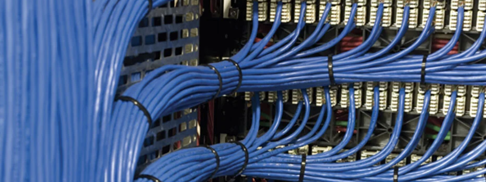
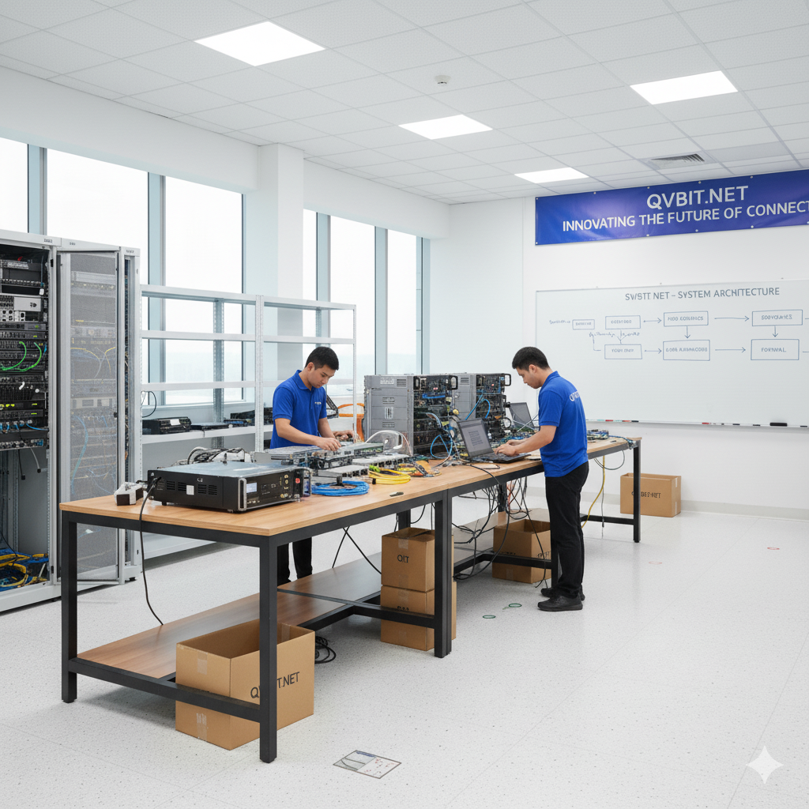

Field Services. Infrastructure.
Managed IT.
Practical technical services for businesses that need dependable infrastructure, responsive field support, and ongoing IT.
Technology support from the ground up
From physical infrastructure and network deployment to ongoing IT support, QVB I.T. connects project work with day-to-day technical operations.

Structured Cabling
Ethernet drops, fiber, racks, patch panels, labeling, testing, and physical infrastructure support.
Learn More →Network Installation
Network deployment, configuration, wireless installation, validation, troubleshooting, and documentation.
Learn More →Remote Hands
On-site technical assistance for equipment installs, moves, maintenance, troubleshooting, and field projects.
Learn More →Managed IT
Monitoring, maintenance, security practices, cloud support, backup planning, and responsive assistance.
Learn More →
Network Staging
Pre-configuration, testing, labeling, documentation, and deployment preparation before equipment reaches the site.
Learn More →Small Business Websites
Professional websites with customer-owned accounts and a simple handoff model.
Learn More →Infrastructure support from deployment through ongoing IT
Field services, network engineering, project delivery, managed IT, and websites—organized around the way your business operates.
Contact Us →Submit a support request.
For technical assistance, project requests, or service questions, send us the details and we'll follow up.
Submit a Support Request →